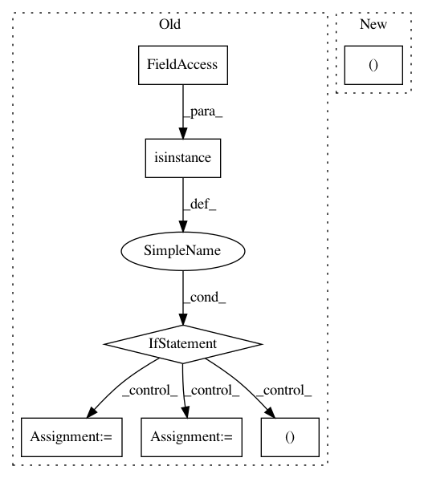

d165905d0ba24cfba414b8e0c20fa8d7c8ab6a6e,nni/retiarii/converter/graph_gen.py,,convert_module,#Any#Any#Any#Any#,285
Before Change
global modules_arg
assert id(module) in modules_arg, "id not exist: {}, {}".format(id(module), module_name)
if isinstance(modules_arg[id(module)], tuple):
positional_args, keyword_args = modules_arg[id(module)]
m_attrs = keyword_args
// TODO: remove positional args
m_attrs["positional_args"] = positional_args
else:
m_attrs = modules_arg[id(module)]
original_type_name = script_module.original_name
if original_type_name in torch.nn.__dict__ and original_type_name not in MODULE_EXCEPT_LIST:
// this is a basic module from pytorch, no need to parse its graph
return None, m_attrs
After Change
ir_graph._register()
return ir_graph, modules_arg[id(module)]
def convert_to_graph(script_module, module, recorded_modules_arg):
In pattern: SUPERPATTERN
Frequency: 3
Non-data size: 7
Instances
Project Name: microsoft/nni
Commit Name: d165905d0ba24cfba414b8e0c20fa8d7c8ab6a6e
Time: 2020-12-10
Author: Quanlu.Zhang@microsoft.com
File Name: nni/retiarii/converter/graph_gen.py
Class Name:
Method Name: convert_module
Project Name: GPflow/GPflow
Commit Name: 5bbd453ab1901bf0a3a4f4684ad5b4b7f8446902
Time: 2018-10-16
Author: art.art.v@gmail.com
File Name: gpflow/expectations/expectations.py
Class Name:
Method Name: quadrature_expectation
Project Name: GPflow/GPflow
Commit Name: 5bbd453ab1901bf0a3a4f4684ad5b4b7f8446902
Time: 2018-10-16
Author: art.art.v@gmail.com
File Name: gpflow/expectations/expectations.py
Class Name:
Method Name: expectation